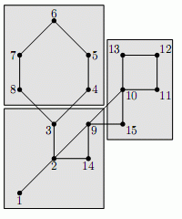

给你一个仙人掌图（每条边最多只属于一个简单环），你需要把这个图的点 集分成大小相等的K部份，并且每部分中的点是相互连通的。 下图是一个１５个点分成３部分的例子。

第一行３个整数，N，M，K表示N个点，M条边。要分成K部分 接下来M行，每行一条路径，路径的第一个数为S，表示路径的长度 接下来S个数表示路径上的节点，相邻的节点之间有一条边。 输入数据保证N是K的倍数，每条边最多只出现一次，整个图是仙人掌图。
有解输出1,无解输出-1
15 3 3 9 1 2 3 4 5 6 7 8 3 7 2 9 10 11 12 13 10 5 2 14 9 15 10
1
1<=N<=50000,0<=M<=N<=10000,2<=S<=1000